See your room redesigned by AI in seconds.
Upload a photo of any room and DecorAIt generates realistic redesigns of that exact space — new furniture, fresh layouts, and curated style palettes. No measuring, no mood boards, no app to install.
- Works in any browser
- Free tokens to start
- Redesigns in seconds
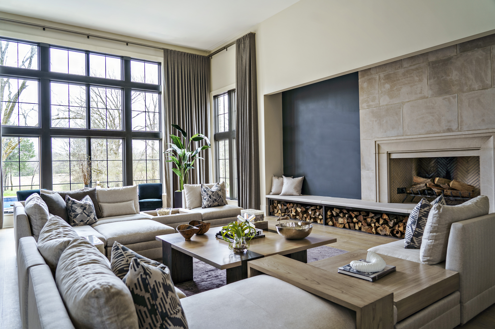
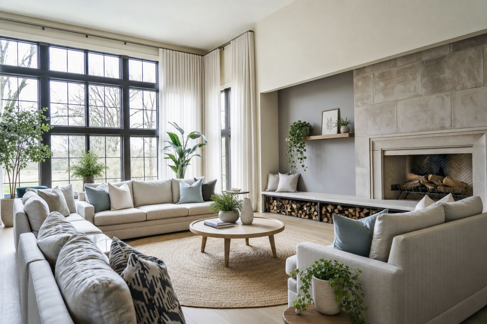
One photo. Endless design directions.
DecorAIt isn't a generic mood-board generator. It transforms your actual room so you can see how a redesign would look in the space you already have.
Real-room redesigns
Upload a photo and get realistic AI-generated versions of that exact room — same walls, same windows, new look.
Empty or furnished
For empty rooms DecorAIt proposes full furnishings. For furnished rooms it suggests smarter arrangements of what you already own.
Feng shui analysis
Get an AI-powered feng shui read of your room — flow of chi, command position, the five elements, and specific suggestions to bring the space into balance.
Floor plan editor
Sketch walls, place furniture, and export a layout — useful for renovations and rearrangement planning.
Woodworking 3D editor
Design custom furniture from boards and get a cut list — perfect for built-ins and DIY projects.
Browser-based
DecorAIt runs in any modern browser on phone, tablet, or desktop. No iOS or Android app required.
Real DecorAIt redesigns.
Drag the handle on each photo to compare the original room with the AI-generated redesign.
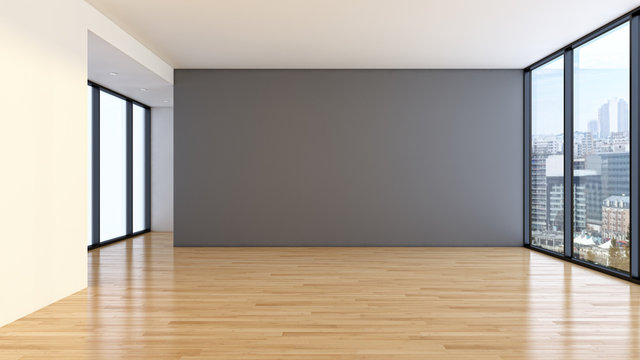
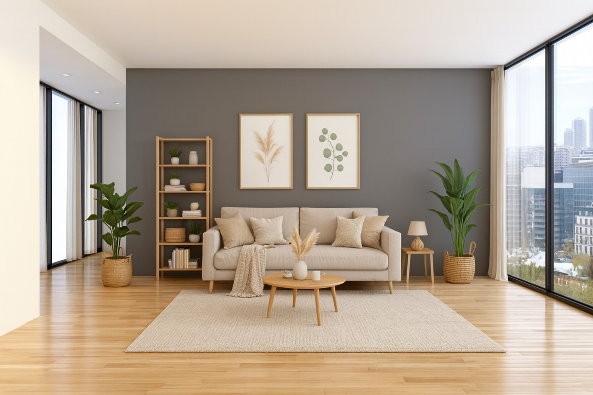
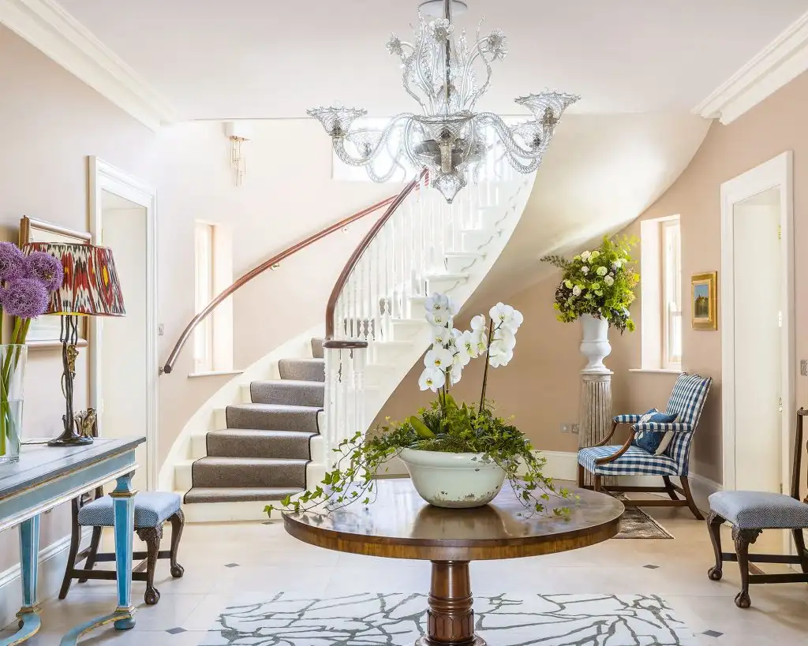
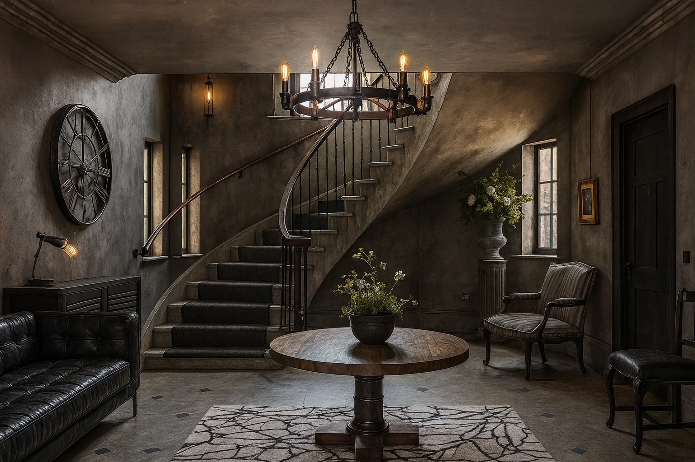
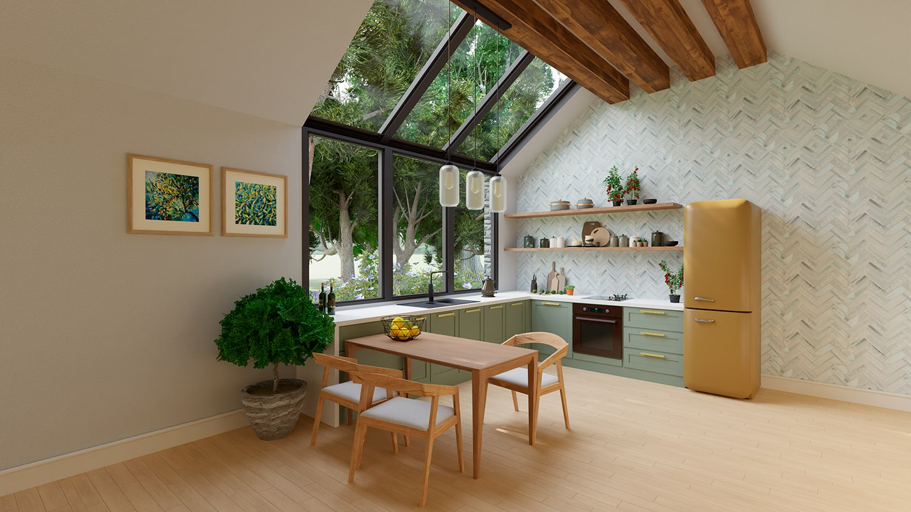
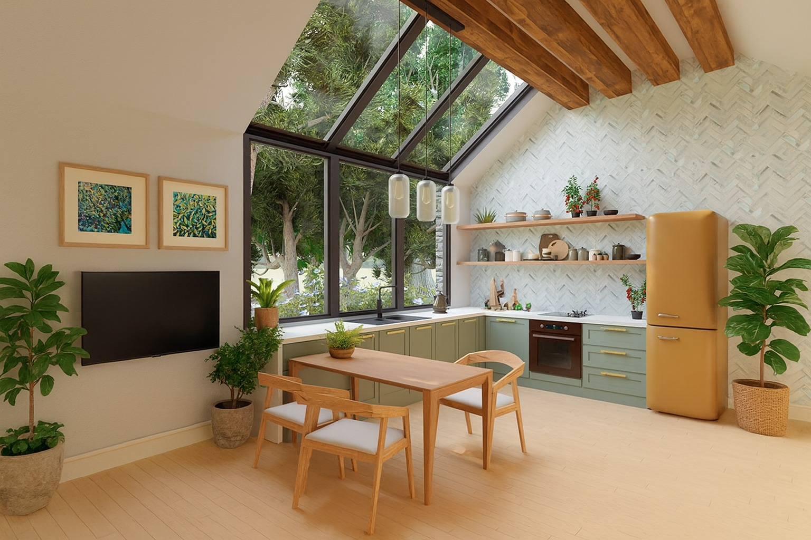
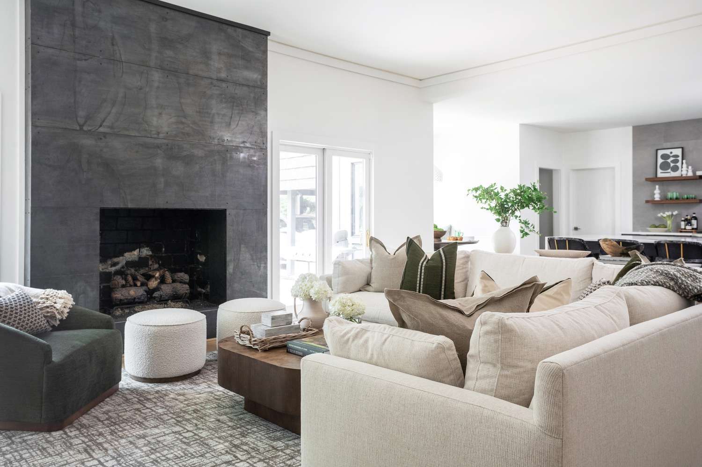
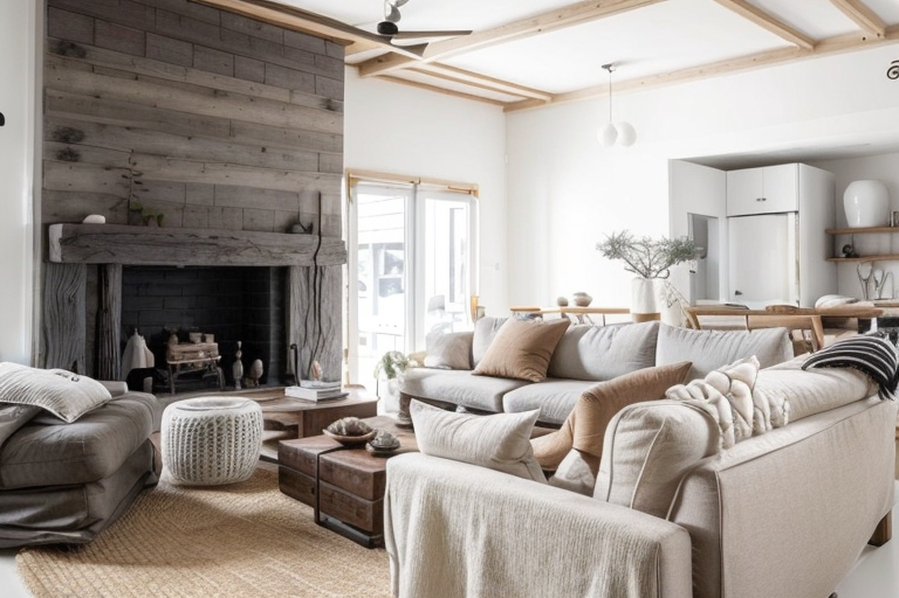
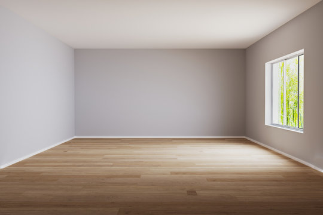
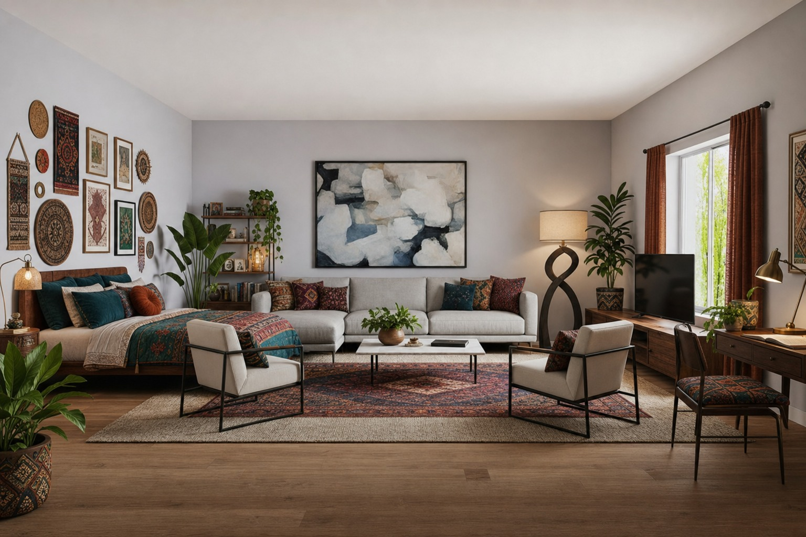
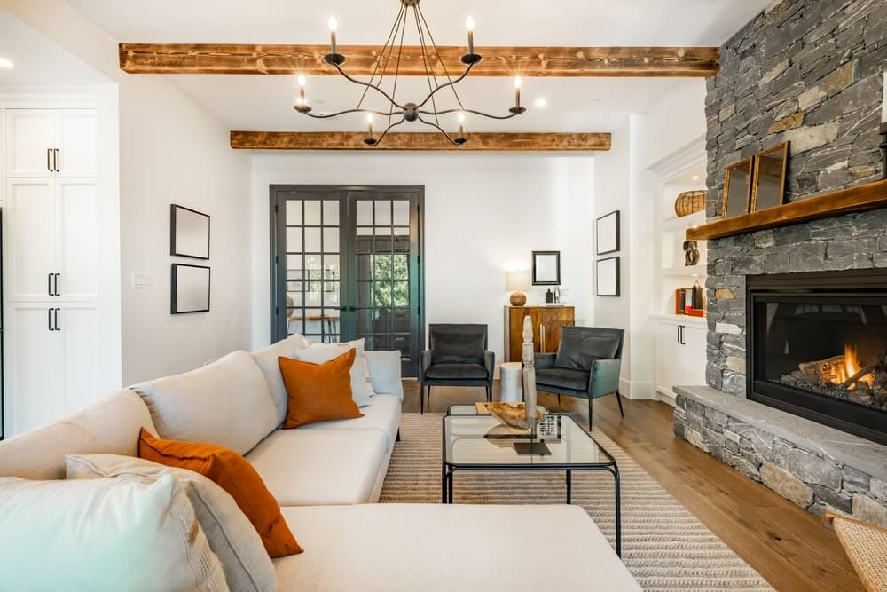
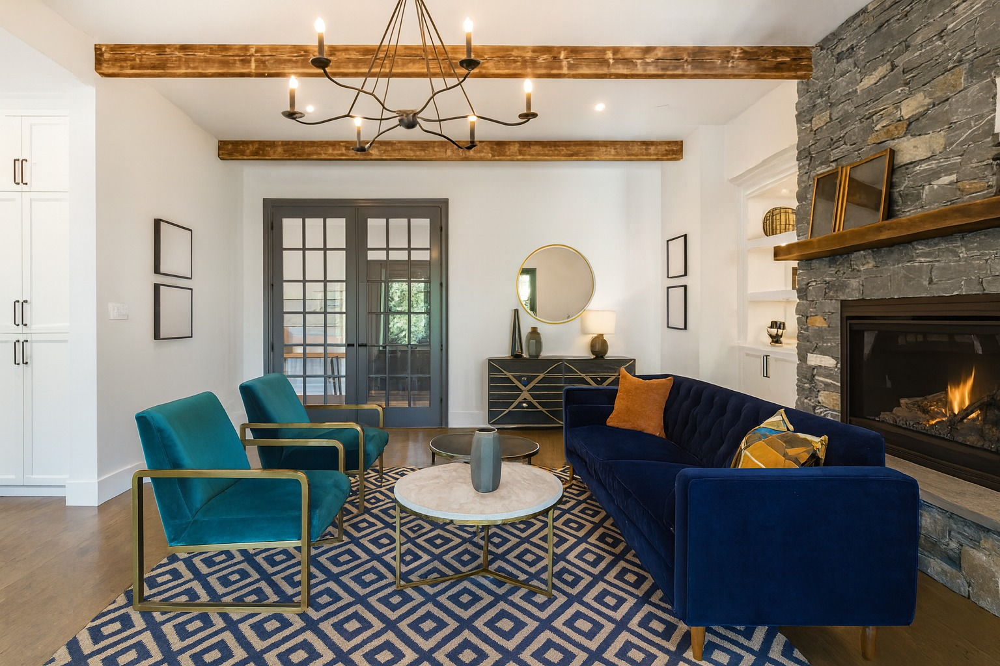
From photo to redesign in under a minute.
Four steps, no learning curve.
Sign in and upload a photo
Create a free account and upload a clear, well-lit photo of the room you want to redesign — or take one with your phone camera.
Tell DecorAIt about the room
Mark whether the room is empty or already furnished. DecorAIt uses a different AI prompt for each so the suggestions match your goal.
Generate redesigns
DecorAIt sends your photo to an AI image model and returns a redesigned version of the same room. Generate alternatives until you find one you love.
Compare and save
Toggle before/after side-by-side and download the designs you want to keep, share, or shop from.
Built for anyone who's wondered "what if?"
Homeowners, renters, agents, designers, makers — anyone who's stared at a room and pictured it differently.
Homeowners
Visualize a redesign before committing to new furniture or paint. Test ideas in the room you actually live in.
Renters
See how your existing furniture could be rearranged for better flow, light, and use of space — no remodel required.
Real estate agents
Show buyers virtual staging of empty listings without the cost or time of physical staging.
Interior designers
Generate fast concept directions to share with clients early in the discovery phase.
DIY makers
Pair the AI redesign with the woodworking editor to design custom built-ins that fit a redesigned room.
House hunters
Snap a photo at a showing and instantly preview how the empty space could feel furnished.
Frequently asked.
What is DecorAIt?
DecorAIt is an AI interior design web application. You upload a photo of a real room and DecorAIt generates redesigned versions of that same room — adding or rearranging furniture, suggesting color palettes, and visualizing decor styles. It runs entirely in the browser; there is no iOS or Android app to install.
How does AI interior design work in DecorAIt?
DecorAIt sends your room photo to an AI image model along with a prompt that describes whether the room is empty or already furnished. The model returns a transformed image of your actual room with new or rearranged furniture, decor, and lighting that fit the space.
Is there an iOS or Android app to install?
No. DecorAIt is a web application — it runs in any modern browser on phones, tablets, and desktops. There is nothing to download.
Is DecorAIt free?
Due to the cost of advanced image generation models, DecorAIt image generation requires tokens to run. Tokens can be purchased on their own or users can subscribe for a higher daily limit.
Does DecorAIt redesign my actual room or just generate generic photos?
DecorAIt redesigns your actual room, unlike generic AI based interior design software tools. DecorAIt sends your uploaded photo to an AI model that transforms that image — keeping your walls, windows, and proportions — so the result is grounded in the real space.
What rooms work best?
Living rooms, bedrooms, dining rooms, kitchens, home offices, and entryways all work well. Use a clear, well-lit photo taken from a corner so the AI can see the full layout.
About DecorAIt.
Built around a single belief: the most useful interior design tool is one that redesigns the room you actually have access to.
What DecorAIt does
DecorAIt is an AI interior design web application. It accepts a photo of a real room and uses an image-generation model to produce a redesigned version of that exact space. The walls, windows, and proportions stay the same — the furniture, decor, lighting, and palette change.
Why a web app, not a native app
We built DecorAIt as a web app so it works everywhere immediately — phones, tablets, desktops, all major browsers — without an app-store install. If you can take a photo, you can use DecorAIt.
How it's different
- Grounded in your real space. DecorAIt transforms your photo, not a generic stock room.
- Different prompts for different starting points. Empty rooms get furnishings; furnished rooms get rearrangements.
- Comparison-first workflow. Toggling before and after is the core interaction, not a hidden feature.
- Designer adjacencies. A floor plan editor and a woodworking 3D editor live alongside the AI redesign tool.
Privacy
Photos you upload are used to generate the redesigns you request and are stored against your account so you can revisit them later. DecorAIt does not sell user images or share them with third parties for advertising or marketing. Authentication uses standard secure tokens. You can delete your saved designs at any time.